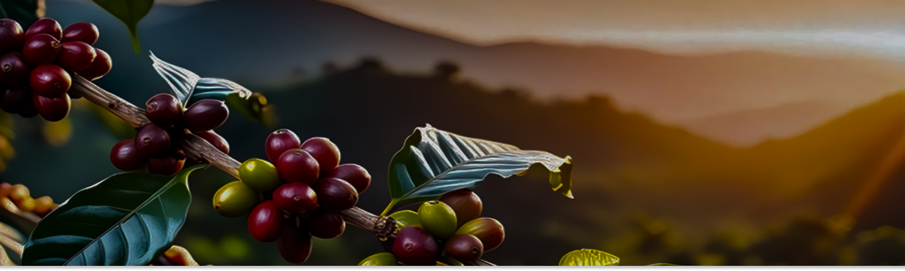
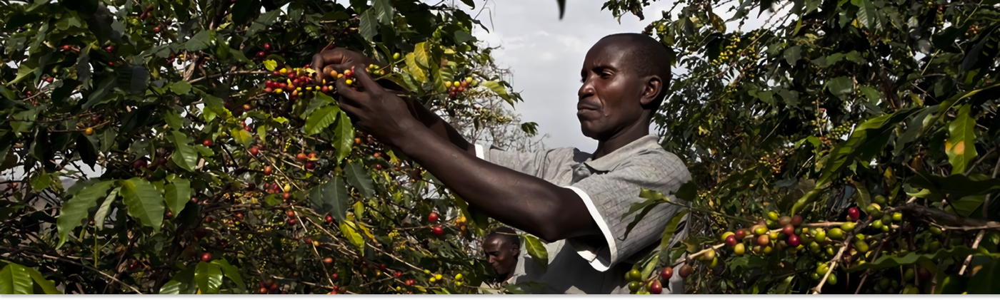
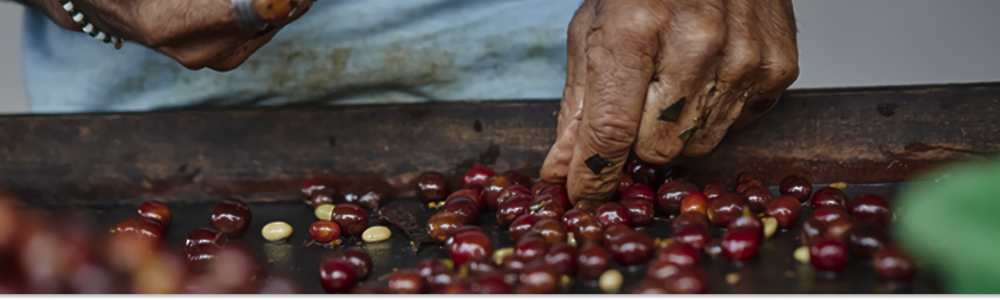
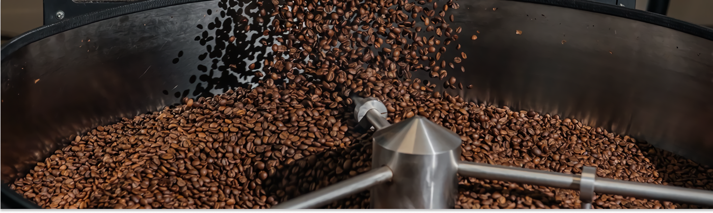
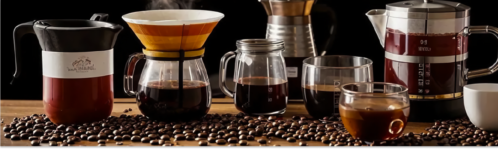

“От горного склона до вашей чашки”

Цветение и ягода
Цветок, что станет ягодой
Все начинается высоко в горах. После сезона дождей кофейное дерево покрывается ароматными белыми цветами, похожими на жасмин. Через несколько месяцев на их месте зарождаются маленькие зеленые ягоды, которые постепенно наливаются соком и меняют цвет на ярко- красный или желтый. Только такие спелые ягоды готовы к сбору.

Сбор урожая
Ручной сбор. Гарантия идеальной спелости.
Для кофе высшего класса (как Rio) используется только selective picking — выборочный ручной сбор. Наши сборщики проходят между деревьями несколько раз за сезон, снимая только полностью созревшие ягоды. Это трудозатратно, но именно так мы гарантируем, что в каждой чашке будет сладость и сложность вкуса, а не горечь незрелого зерна.

Обработка — рождение вкуса
Мытая или натуральная? Решающий этап.
Мытая обработка: Ягоды очищают от мякоти, а зерна ферментируют и промывают. Результат — чистый, яркий, кисловатый вкус с отчетливыми нотами. Натуральная обработка: Целые ягоды сушатся на солнце. Зерно впитывает сахара из мякоти. Результат — сладкий, ягодный, плотный вкус с низкой кислотностью. Каждый лот Rio мы выбираем с учетом желаемого вкусового профиля.

Обжарка — где раскрывается душа кофе
Магия тепла. Из зеленого — в ароматное.
Мытая обработка: Ягоды очищают от мякоти, а зерна ферментируют и промывают. Результат — чистый, яркий, кисловатый вкус с отчетливыми нотами. Натуральная обработка: Целые ягоды сушатся на солнце. Зерно впитывает сахара из мякоти. Результат — сладкий, ягодный, плотный вкус с низкой кислотностью. Каждый лот Rio мы выбираем с учетом желаемого вкусового профиля.

Помол и заваривание — ваш творческий финал
Финал пути — в ваших руках.
Помол: Разный для каждого метода (крупный для френч-пресса, средний для заливных, тонкий для турки). Вода: Мягкая, без посторонних запахов, правильной температуры (90-96°C). Метод: Каждый способ (эспрессо, пуровер, аэропресс) как разный музыкальный инструмент, раскрывающий в одном кофе новые ноты.